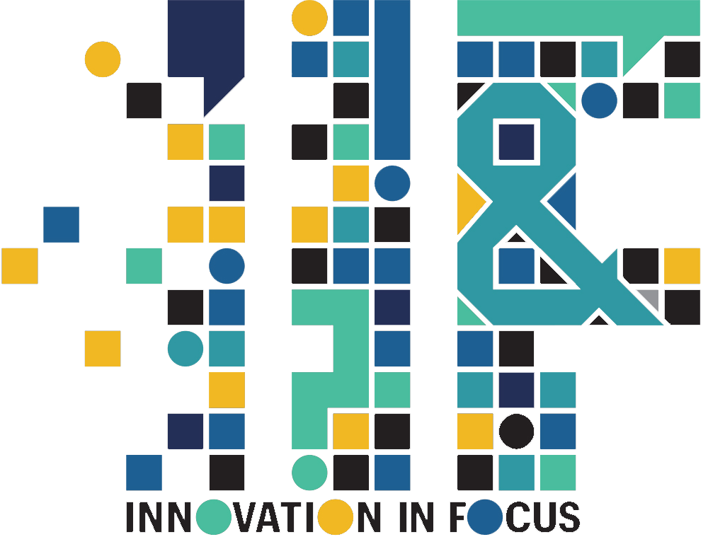

How to gain buy-in and knowledge before building a news product
At the Star Tribune, we will be creating a Slackbot to generate audience analytics reports. These reports can better support the newsroom as they learn about their online performance and adjust their content strategies.
Emily Hood, Student Innovation Fellow

Republication tracking requires both technical solutions and strong partnerships
The 19th is rebuilding its pixel to improve that tracking, and they will likely make it open source. We talked to Blachman about building tracking pixels and any advice she has for other news organizations navigating republication tracking.
Emily Lytle, IIF Editor
Adobe Podcast, Audo Studio and other tools bring new possibilities to editing audio and overprocessing
Whether you’re an audio journalist, host a podcast or record audio interviews for stories on rare occasions — you’ve likely run into one (if not all) of the many common disruptions to clean audio: dogs barking, traffic blaring, winds howling, background buzzing from AC units, construction and more. Innovation in Focus tested four different AI audio editing services to see how they clean up imperfect audio for different situations.
Laine Cibulskis, Student Innovation Staff

Innovation in Focus is a series experimenting with new tech, tools and methods of storytelling for journalism. We interview experts, test ideas and provide our findings on a different topic each month.
Sign up for the Innovation in Focus Newsletter to get the monthly delivery of experiments in your inbox.

Five different AI options for transcribing audio
While we could not test every AI transcription service out there, we chose five options that we found highly recommended and/or free alternatives with unique tools that could be helpful in day-to-day reporting. We partnered with KBIA to run an audio interview through each of these services: Parrot AI, Otter AI, Google Pinpoint, Rev and Sonix.
Emily Lytle, IIF Editor
Creating an affordable sms system for your community newsroom
While we could not test every AI transcription service out there, we chose five options that we found highly recommended and/or free alternatives with unique tools that could be helpful in day-to-day reporting. We partnered with KBIA to run an audio interview through each of these services: Parrot AI, Otter AI, Google Pinpoint, Rev and Sonix.
Eli Hoff, Student Innovation Staff
How to create and launch an evergreen pop-up newsletter
These newsletters work as an asynchronous experience. The reader signs up, starts getting the newsletter once a week, and stops once they’ve gotten them all. The content in these newsletters must be evergreen because any reader can subscribe to the newsletter any time.